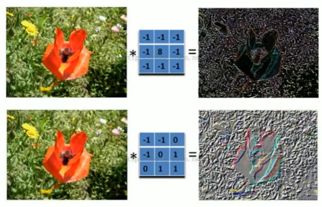
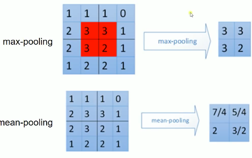

Tensorflow 实现卷积神经网络
Table of Contents
1 Tensorflow-CNN
CNN: 局部感受和权值共享
卷积核可以理解成一个模式匹配或者更形象一点,理解成滤波器.

有几个卷积核就可以采样出几个特征图.
池化上接卷积层, 一般有三种: max-pooling, mean-pooling, random-pooling

padding
same padding: 不保证; 可以超过图片边界采样
valid padding: 不保证; 不可以超过
一张 2*3 的图片,经过 "SAME" 和 "VALID" 两种方式采样, 会得到的不同结果 +---+---+---+ | | | | |---+---+---| | | | | +---+---+---+ 以 2*2 步长为 2 的窗口以 same padding 的方式进行 pooling 操作 ........... ............ .---------.--+ +---+--.-+---+****. .| | |. | | | . | | *. .|---+---+.--| ---> |---+--.-+---|****. ---- 因为不够 2*2 了所以这里会 .| | |. | | | . | | *. 多补出一列, 最终会采样出 .---------.--+ +---+--.-+---+****. 1*2 的矩阵 .......... ............ 以 2*2 步长为 2 的窗口以 valid padding 的方式进行 pooling 操作 ........... .---------.--+ +---+---+---+ .| | |. | | | | | .|---+---+.--| ---> |---+---+---+ ---- 不够了就停止 .| | |. | | | | | 最终会采样出 .---------.--+ +---+---+---+ 1*1 的矩阵 ..........
2 CNN 应用于MNIST数据集分类
<<包导入>> # <<导入 projector: for embeddings 可视化>> <<数据准备>> # numpy构造(with/without noise) # 数据集导入内存(one_hot or not) # 截取已经存在数据集 <<图参数>> # 批次大小 # 批次数量 # dropout 保留率 # 数据集位置 <<工具函数与工具声明>> # 对某些 Variable 进行 OP 并 summary # <<def Variable: for embeddings 可视化>> as untrainable Variable, stack front 3000 img, give name 'embeddings' # <<file IO: for embeddings 可视化>> read in one_hot labels, argmax get true labels, write to file in one-label-one-line format # W, b 初始化工具函数 <<图构造>> # 一神: NN layers, name_scope for TB, 参数 summary # 1. placeholders # 1.1 x: dataset placeholder, # + <<def OP: for img process, CNN >> reshape x ------+ # 1.2 y: labelset placeholder, | # 1.3 keep_prob: dropout, keep rate of certain layer's nodes | # 2. Variables | # 2.0 名称空间设置 | # 2.1 第一层权重 W, 声明 summary tf.summary.scalar/image/histogram node | # 2.2 第一层偏置 b, 声明 summary tf.summary.scalar/image/histogram node | # + <<conv2d layer: for CNN>> 只接受 [batch_size, height, width, channels] 格式 <-+ # + <<max_pool layer: for CNN>> # 3. Operations # 3.1 第一层输出(active_fn(score)), 声明 summary tf.summary.scalar/image/histogram node # 两函: # 1. err_fn: # 1.1 名称空间设置 # 1.2 err fn(单点错误), 声明 summary, tf.summary.scalar/image/histogram node # 2. loss_fn: # 2.1 名称空间设置 # 2.2 loss fn(整体错误), 声明 summary, tf.summary.scalar/image/histogram node # 两器: # 1. 初始化器 # 2. 优化器 # 2.1 名称空间设置 # 准确率计算 # 1. correct_prediction # 1.1 名称空间设置 # 2. accuracy # 2.1 名称空间设置 # 合并summary # 配置 embeddings 可视化参数 <<图计算>> # 运行初始化器 # summary Writer for TB # for epoch_num: << # 1. for batch_num: # 1.1 x_y_of_next_batch; # 1.2 运行 优化器计算 and summary计算 # 2. 运行准确率计算 # matplot绘图
卷积核: [shape, image_channel, 卷积核个数], 就是缩减版的权重. 局部感受和权值共享.
import tensorflow as tf from tensorflow.examples.tutorials.mnist import input_data mnist = input_data.read_data_sets('MNIST', one_hot=True) batch_size = 100 n_batch = mnist.train.num_examples // batch_size # 初始化权值和截距 def weight_variable(shape): """ shape = [filter_height, filter_width, in_channels, number] """ initial = tf.truncated_normal(shape, stddev=0.1) return tf.Variable(initial) def bias_variable(shape): initial = tf.constant(0.1, shape=shape) return tf.Variable(initial) # 卷基层 def conv2d(x, W): """ x input tensor of shape `[batch, in_height, in_width, in_channels]` 卷积核个数 ------------ W filter / kernel tensor of shape [filter_height, filter_width, in_channels, out_channels] strides [1, x, y, 1] `strides[0]=strides[3]=1` strides[1] 代表x方向的步长, strides[2]代表y方向的步长 padding: a `string` from: `"SAME" or "VALID"`, """ return tf.nn.conv2d(x, W, strides=[1,1,1,1], padding='SAME') # 池化层 def max_pool_2x2(x): """ ksize [1, x, y, 1] 窗口大小 ksize[1] 表示x方向的大小, ksize[2]表示y方向的大小 strides [1, x, y, 1] `strides[0]=strides[3]=1` strides[1] 代表x方向的步长, strides[2]代表y方向的步长 """ return tf.nn.max_pool(x, ksize=[1,2,2,1], strides=[1,2,2,1], padding='SAME') # 卷积核与池化矩阵的移动都是通过设置 strides 来指定的,且格式固定 [1, x, y, 1] # 不同的是两者大小的设定, 卷积核通过 filter 来设置[filter_height, filter_width, in_channels, out_channels] # 池化矩阵大小通过 ksize 来设置[1, x, y, 1] # 定义两个placeholder x=tf.placeholder(tf.float32, [None, 784]) y=tf.placeholder(tf.float32, [None, 10]) # 改变x的格式为4D向量[batch, in_height, in_width, in_channels] x_image = tf.reshape(x, [-1, 28, 28, 1]) # 初始化第一个卷基层的权值和偏置 W_conv1 = weight_variable([5,5,1,32]) #5*5的采样窗口, 32个卷积核从1个平面抽取特征 b_conv1 = bias_variable([32]) # 每一个卷积核一个偏置 # 把x_image和权值向量进行卷积, 再加上偏置值, 然后应用于 relu 激活函数 h_conv1 = tf.nn.relu(conv2d(x_image, W_conv1) + b_conv1) h_pool1= max_pool_2x2(h_conv1) #进行max-pooling # 初始化第二个卷基层的权值和偏置 W_conv2 = weight_variable([5,5,32,64]) #5*5的采样窗口, 64个卷积核从32个平面抽取特征 b_conv2 = bias_variable([64]) # 每一个卷积核一个偏置 # 把h_pool1和权值向量进行卷积, 再加上偏置值, 然后应用于 relu 激活函数 h_conv2 = tf.nn.relu(conv2d(h_pool1, W_conv2) + b_conv2) h_pool2= max_pool_2x2(h_conv2) #进行max-pooling # 28*28的图片第一次卷积后还是28*28, 第一次池化之后变为14*14 # 第二次卷积后为14*14, 第二次池化后变为7*7 # 经过上面操作后得到 64 张 7*7 的 feature map # 初始化第一个全连接层的权值 W_fc1 = weight_variable([7*7*64, 1024]) # 上一层有 7*7*64 个神经元, 全连接层有2014神经元 b_fc1 = bias_variable([1024]) # 把池化层2的输出扁平化为1维 h_pool2_flat = tf.reshape(h_pool2, [-1, 7*7*64]) # 求第一个全连接层的输出 h_fc1= tf.nn.relu(tf.matmul(h_pool2_flat, W_fc1) + b_fc1) # keep_prob 用来表示神经元的 dropout keep 率 keep_prob = tf.placeholder(tf.float32) h_fc1_drop = tf.nn.dropout(h_fc1, keep_prob) # 初始化第二个全连接层 W_fc2 = weight_variable([1024, 10]) # 上一层有 7*7*64 个神经元, 全连接层有2014神经元 b_fc2 = bias_variable([10]) # 计算输出 prediction = tf.nn.softmax(tf.matmul(h_fc1_drop, W_fc2) + b_fc2) # 交叉熵代价函数 cross_entropy = tf.reduce_mean(tf.nn.softmax_cross_entropy_with_logits_v2(labels=y, logits=prediction)) # 使用 AdamOptimizer 优化 train_step = tf.train.AdamOptimizer(1e-4).minimize(cross_entropy) # 结果存放在一个bool list 中 correct_prediction = tf.equal(tf.argmax(prediction, 1), tf.argmax(y, 1)) # 求准确率 accuracy = tf.reduce_mean(tf.cast(correct_prediction, tf.float32)) # 图计算 with tf.Session() as sess: sess.run(tf.global_variables_initializer()) for epoch in range(21): for batch in range(n_batch): batch_xs, batch_ys = mnist.train.next_batch(batch_size) sess.run(train_step, feed_dict={x:batch_xs, y:batch_ys, keep_prob:0.7}) acc = sess.run(accuracy, feed_dict={x:mnist.test.images, y:mnist.test.labels, keep_prob:1.0}) print("Iter " + str(epoch) + ", Testing Accuracy= " + str(acc))
0 - c77968f5-e34e-486e-b388-69e1e8d4cca8
这里可通过 FileWriter 写入两次文件, 分别写入 train_accu 的 summary 和 test_accu 的 summary, 这样在 tensorboard 中就可以同时看到两条 accuracy 变化曲线.通过这种方式, 可以很方便的判断模型是否存在 overfitting 的情况.